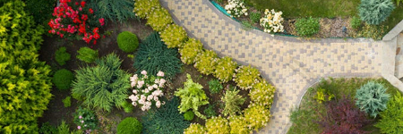
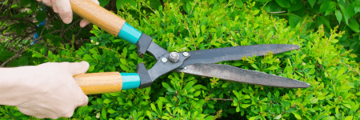
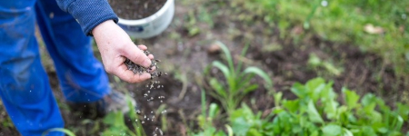

1. Recortar y dar forma a arbustos.
2. Eliminar las malas hierbas.
3. Aplicación de fertilizante.
4. Recojida de basura.

Diseños de jardines
1. Diseño y construcción de jardines.
2. Servicio de control biológico de plagas.
3. Mantenimiento de área verdes.
4. Servicio de traslado y poda de alboles.

Poda de planta
1. Recorte de arboles y arbustos.
2. Forma de plantas.
3. Eliminación de ramas o brotes.

Abonado
1. Identificar las necesidades de las plantas
2. Selección de abono.
3. Epoca de abonado.
4. Aplicación del abono.